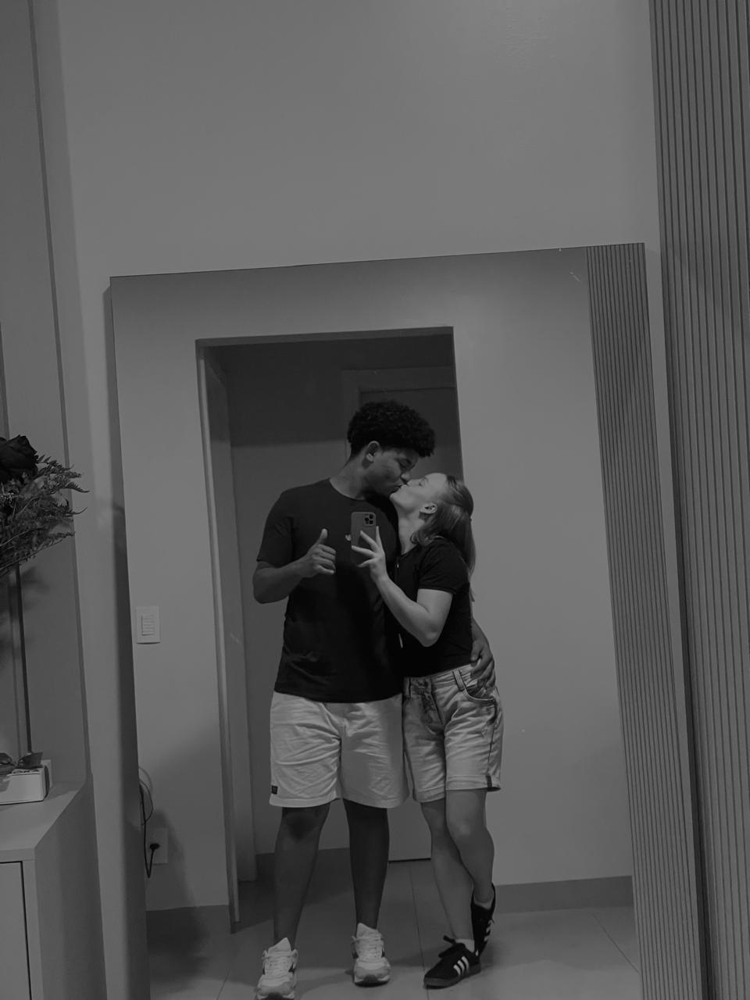
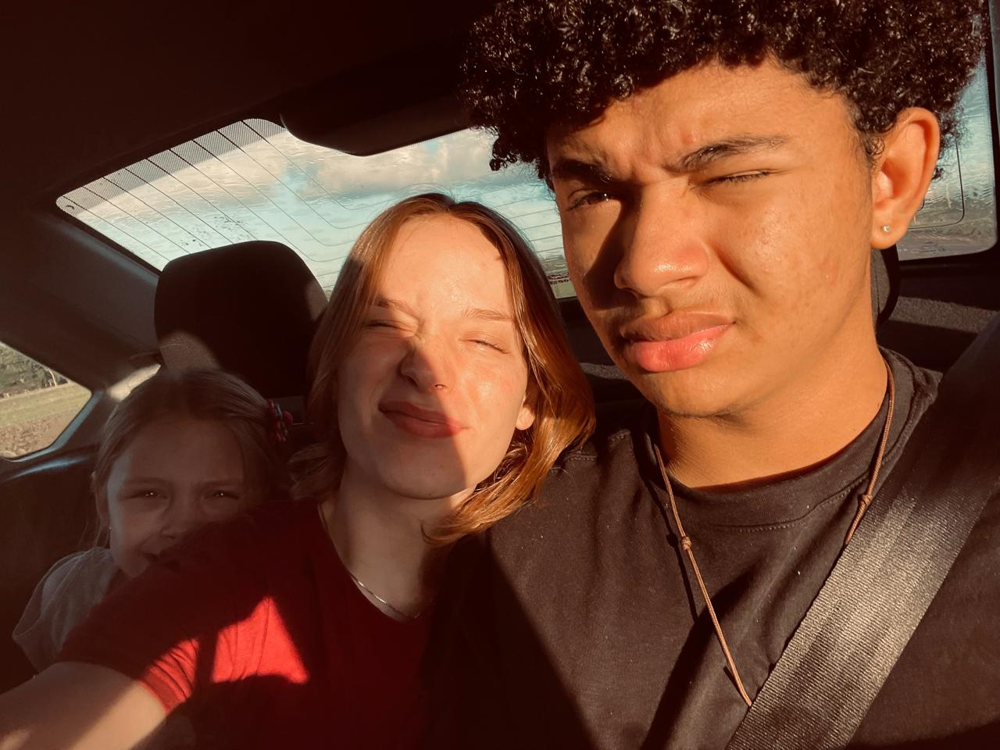
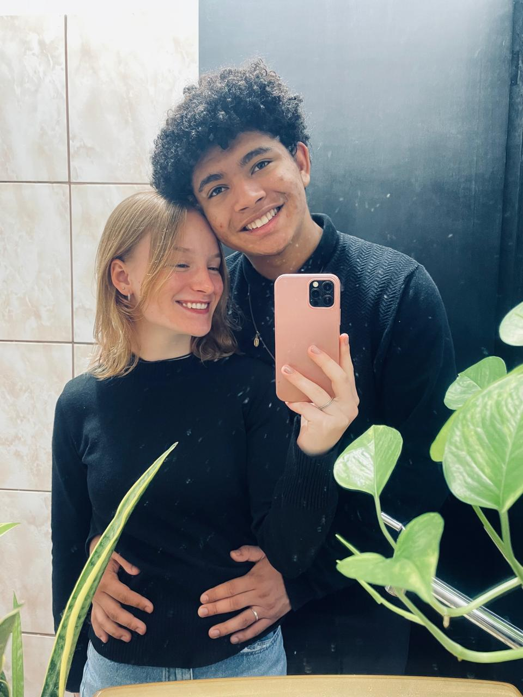
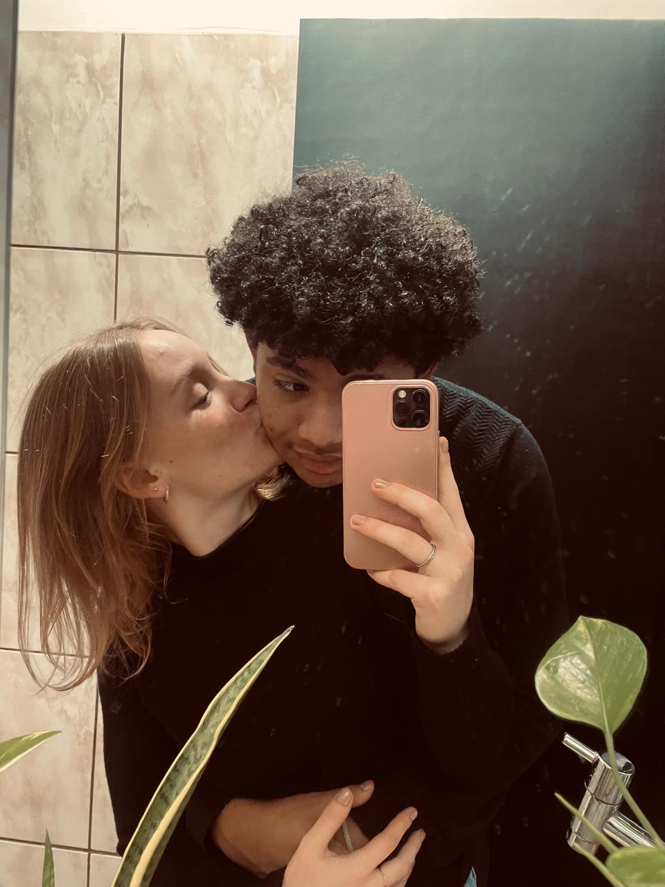

Carta aberta ao Meu Amor
Sofia, hoje dia 15 de Maio de 2026 você completa os seus 17 anos, desses 17 anos eu estou na sua vida a mais ou menos 4 Anos, mas oficialmente eu faço parte dela a 1 ano e 6 meses. Não é exagero dizer que esses 1 ano e 6 meses foram os melhores 1 ano e 6 meses na minha vida inteira, entre complicações e intrigas, onde 100% das vezes eu saio de cabeça quente, basta eu ligar a tela do meu celular , olhar sua foto e todo o estresse que eu tenho em minha mente, vai sumindo aos poucos.
Pois não há nada no mundo que me faça tão bem quanto você, quanto eu penso em desistir, eu olho para tela do meu celular e lembro o motivo de eu ainda estar de pé, esse motivo é VOCÊ, VOCÊ é o motivo de eu levantar toda manhã e ir trabalhar, VOCÊ é o motivo de todo dia eu me arrumar na correria para ir pra faculdade, VOCÊ é o motivo de eu querer mais todos os dias.
Sei que você ama cartinhas ponitinhas, mas eu acho o site tão ponitinho quanto. e para declarar mais ainda o meu amor, ai vai um poema para ti minha flor
VOCÊ
Varios dias eu sinto sua falta
Ooo saudade que quase me mata
Cê acredita que não seria exagero eu falar
Eu preciso te ver, se não a saudade vai me matar
Eu preciso sentir VOCÊ
Cansado a noite eu necessito de VOCÊ
Outro dia eu quase morri sem VOCÊ
Vou à sua casa, para assim matar a saudade que eu sinto por VOCÊ
Todos os dias eu lembro de quando te conheci
A paixão naquele momento eu senti
Loira, nanica e exuberante
Ta bom, eu admito meu coração chegou a ficar radiante
Não I.A no mundo que descreva o quanto eu amo te amar
E se Deus quiser, em alguns anos iremos nos casar.
Feliz Aniversario meu amor, eu amo muuuuuito você, e sempre pode contar comigo pra quaseee tudo, menos apertar minha cara...
ASS: David, Dvds


